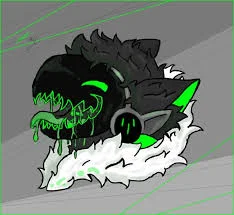

Nombre: Toxer
Especie: Protoxia Aetherea ⓘProtoxia Aetherea es un término taxonómico que identifica a una entidad digital y tóxica. El nombre se deriva de la combinación de Protogen (Proto-). seguidamente con su naturaleza tóxica (Toxia), de origen en la información pura y etérea (Aetherea). Incluye la posibilidad de manifestación física.
Subespecie: Antropomórfico
Identificación: EAZ#666-1
Peso: 1.400kg
Altura: 365cm
Género: Masculino
Clasificación: Liminalis + Obscuris
Entidades Relacionadas: EAZ#666
Información
Toxer es un protogen colosal con una apariencia imponente y biotecnología avanzada, descrito como una z18nqy17 r18 q41917h1B417 r19t19h17y, 17119z17y 517yi17w18 m 174z17 i19i19181h18. Posee una altura de 3.65 metros y un peso de 1.400 kg. Su constitución es extremadamente corpulenta y musculosa, con una estructura robusta similar a la de un tanque, optimizada para combate pesado y resistencia extrema.
En cuanto a sus colores y materiales, su tono principal es verde intenso y brillante, con variaciones neón en zonas como el núcleo, venas visibles y articulaciones. Su visor, con forma de lobo, presenta detalles y colmillos afilados, y una mirada penetrante de tono verdoso con brillos tóxicos, mostrando frecuentemente expresiones o íconos de amenaza digital. La superficie de su cuerpo es principalmente 1A4tY7119q17, destacando tubos y venas metálicas por las cuales circula veneno q1Az1A 5171t418. De su boca y garras gotea constantemente saliva tóxica en condiciones normales.
Sus extremidades y postura se caracterizan por brazos largos y gruesos, equipados con garras metálicas afiladas capaces de cortar incluso diamante; sus articulaciones están reforzadas y cubiertas de placas segmentadas. Sus piernas son potentes y diseñadas para saltos bestiales. Aunque camina en dos patas por defecto, puede pasar a modo cuadrúpedo para alcanzar la velocidad máxima, adoptando una postura salvaje similar a la de un lobo mutado al correr en cuatro patas, dejando huellas corroídas por el veneno que gotea.
Entre sus rasgos especiales se incluye una cola de tiburón grande y pesada, completamente 1A4tY7119q17 de carne, que puede ser utilizada como un látigo contundente o para mantener el equilibrio durante saltos. Algunas zonas de su cuerpo muestran venas expuestas por donde corre un fluido verde neón brillante (su veneno nuclear), pulsando con cada movimiento. Un núcleo tóxico, ubicado en el pecho dentro de su cuerpo, funciona como su corazón y generador de veneno y toxinas.
Otros detalles notables incluyen su presencia extremadamente intimidante, con un aura oscura y pesada, generando incomodidad o miedo, como si su toxicidad se pudiera sentir en el aire. Al moverse, emite crujidos metálicos, zumbidos digitales y goteos venenosos; su respiración es profunda y distorsionada, asemejándose a la de una bestia mecánica.
Según los datos estadísticos, la entidad presenta una estatura de 3.65 metros y un peso total de 1400 kilogramos. Se hipotetiza que el elevado peso corporal se atribuye a la mecanización de su cuerpo o a la presencia de componentes metálicos pesados integrados en diversas partes del mismo.
Observaciones y Comportamiento
UPEA Corp. — ExpedienteSin datos registrados actualmente.
Se ha documentado que la entidad muestra una marcada preferencia por el consumo de carroña proveniente de fauna salvaje.
Extremadamente autoritario, exhibiendo un alto grado de ingenio y sarcasmo.
Manifiesta una marcada actitud de superioridad, considerando a otros como razas inferiores. No obstante, se ha observado un respeto incondicional hacia EAZ#666.
La información registrada en Observaciones y Comportamiento puede ser modificada para actualizar los datos necesarios, proporcionados por la propia entidad EAZ o derivados de los estudios e investigaciones realizados por UPEA Corporation.